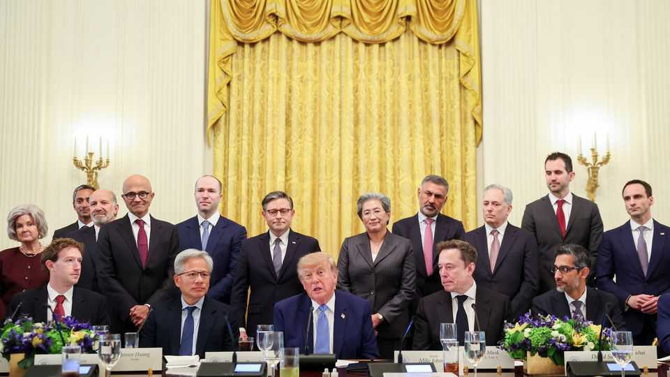

Donald Trump’s untenable strategy for AI
The president’s desire to unleash the technology is running into political reality

Oct 8th 2026
THE GLITZY gathering in Washington on September 29th to roll out America.gov had more in common with an iPhone launch than the announcement of a government website. The new portal, powered by large language models from Google and SpaceXAI, would transform how Americans receive federal services, officials declared. Marco Rubio, the secretary of state, strode the stage as if trying to be a besuited Steve Jobs, explaining how an artificial-intelligence (AI) chatbot would soon make it easier for Americans to get passports.
The jamboree was followed by a White House lunch with tech leaders to sign a “constitution” to police themselves, then by the announcement, on October 4th, of a “Super Intelligence Force”, adopting the term for AI that Donald Trump has now decreed by executive order. Jay Clayton, the director of national intelligence, will lead the force, co-ordinating the government’s engagement with not just AI firms and infrastructure operators but consumers and religious groups.
All this is part of Mr Trump’s new effort to sell sceptical Americans on the benefits of AI. It is a task with high stakes. The president is loth to restrain the AI boom, which on October 6th propelled American markets to a record high.
Yet nearly eight in ten Americans want the development of powerful AI to be slowed or halted, including Republicans. More than 90% want guardrails on the technology. Mr Trump is having none of it. In recent weeks he has dismissed concerns as a hoax, lambasted proposed laws as efforts to “stifle” AI, and praised the “tremendous self-regulation” by firms. But as frontier models get better and voters get angrier, Mr Trump’s stance will come under growing pressure.
Several camps have competed to shape the president’s view. Two of his most important deputies, Scott Bessent, the treasury secretary, and Susie Wiles, the White House chief of staff, have long been alive to the risks of AI, with Mr Bessent particularly concerned that errant models could wreak havoc on America’s financial system. Tech bosses including Dario Amodei, the head of Anthropic, a leading AI firm, and Sir Demis Hassabis, the co-founder of Google DeepMind, have pushed for greater regulation and legislation.
The message from other tech leaders has been more muddled. Sam Altman, the chief executive of OpenAI, Anthropic’s main competitor, has publicly expressed agreement with Mr Amodei’s call for a slowdown in AI development. But Greg Brockman, OpenAI’s president, has given large sums to Leading the Future, a super PAC which has sought to weaken regulation at the state level. Elon Musk, who runs SpaceXAI, wants labs to review each other’s models, but has also expressed public support for Mr Amodei’s position.
However, it is those pushing firmly in the other direction, against regulation, who have to date held sway. That group includes David Sacks, a venture capitalist who advises Mr Trump on AI, as well as Jensen Huang, the leather-jacketed boss of Nvidia, a chip firm whose products have fuelled the AI boom, and Mark Zuckerberg, the co-founder of Meta.
The anti-regulation camp offers a barrage of reasons for Mr Trump to hold back: that existential risks are exaggerated, that existing rules are sufficient and that hasty regulation will puncture America’s AI boom, contributing to a crash, and make the country a laggard to China. Even if America could design sensible rules, the regulatory sceptics assert, the government could never afford the talent needed to evaluate fast-changing models. One insider notes that Anthropic’s partnership with Accenture, a consultancy, to evaluate its models runs to $2bn over five years. The annual budget of CAISSI, the government’s safety body for AI, is $15m.
Such arguments helped gut an executive order backed by Mr Bessent and Ms Wiles this summer, which would have strengthened regulation of AI. At the lunch with tech bosses on September 29th, Mr Trump was flanked by Messrs Huang and Musk—Mr Amodei was exiled near the end of the table. The joint agreement with the firms, which Mr Trump described as “morally binding”, includes the pledge to institute “robust internal controls” to prevent hacking and other bad behaviour and to partner with independent auditors to monitor those controls. In practice, it adds little to what most firms were already doing.
One possibility is that Mr Trump doubles down on his opposition to regulation, vetoing any new laws and using executive power to keep AI firms on a short leash. Already, Mr Trump has shown he is willing to flex presidential muscle on occasion. The Federal Trade Commission has launched a probe into Anthropic, OpenAI and several other AI firms, as well as METR, a non-profit which evaluates models, over unfair or deceptive practices. Anthropic and Open-AI now seek the administration’s sign-off for new users of the most advanced models each week, according to people familiar with the process, a licensing regime in all but name. AISI, Britain’s highly regarded safety institute, recently lost early access after the administration insisted that American evaluators have first sight.
The White House is keen to avoid writing “a big rulebook” that could be misused by the next administration, says Janet Kelly of the Alliance for a Better Future, a right-leaning advocacy group. Overseeing AI through sporadic executive action would be a more flexible and capricious instrument than congressional statute, allowing Mr Trump to penalise some companies while sparing those in his favour, like Nvidia. In the past six months firms at the heart of the AI boom have driven more than half of the rise in the S&P 500.
However, this approach may be running out of time. Political opposition to AI is growing, including among the president’s supporters, who have long berated tech firms over children’s safety and censorship. In a sign of the shifting mood, Mr Brockman has backed out of giving another $25m to Leading the Future, after sharp opposition from OpenAI’s staff. Beyond the White House, momentum for intervention is building in the capital. “If there’s anything that we agree on in Washington right now, I think it’s that we know that we need to act,” says Ms Kelly. Already, members of both parties have introduced legislation to tighten rules. If Democrats win both the House and Senate in next month’s midterm elections, Congress may move more forcefully. And if Congress fails, states will step in, points out Ms Kelly, creating a patchwork of laws.
Mr Trump has left his options open. Michael Kratsios, his science and technology adviser, speaking at the United Nations on September 23rd, attacked the idea of global arrangements to control AI. But he acknowledged that Congress would “legislate and regulate”. The White House accord with tech firms allowed for this possibility. “Over time,” it noted, “it may make sense to codify these steps into laws or regulations.” The president has long been a preternaturally gifted navigator of political currents. Yet there are no issues where the public mood has soured as quickly as it has on AI, a technology that has evolved with unprecedented speed. That could leave even Mr Trump adrift. ■
Stay on top of American politics with The US in brief, our daily newsletter with fast analysis of the most important political news, and Checks and Balance, a weekly note that examines the state of American democracy and the issues that matter to voters.